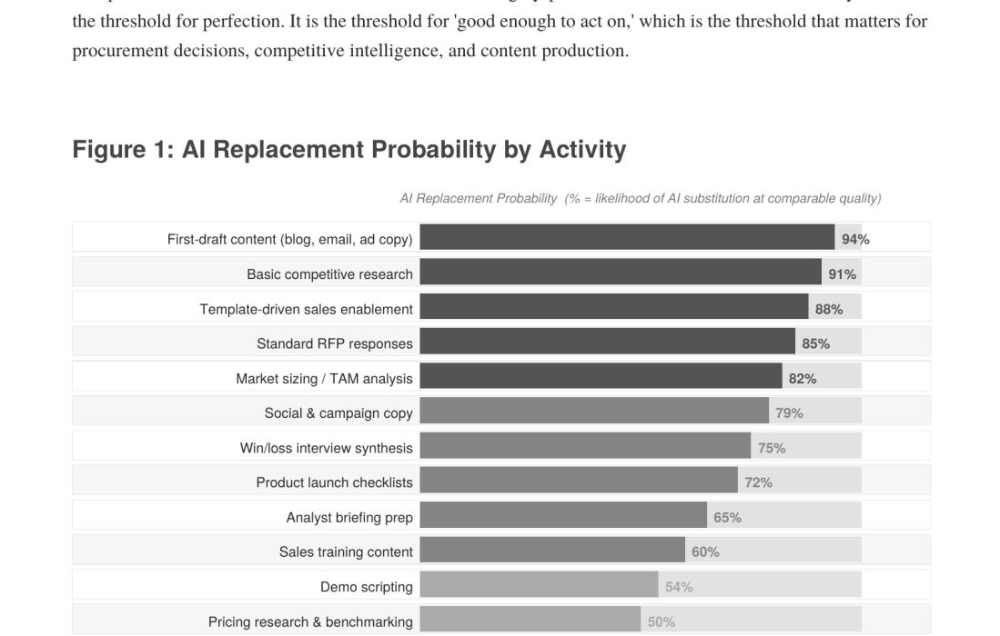
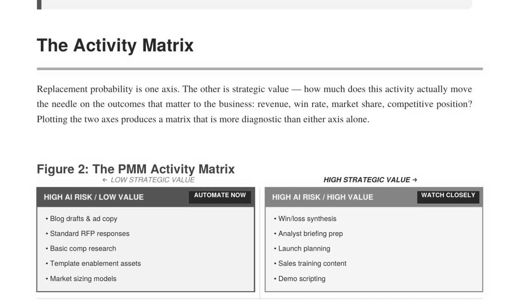
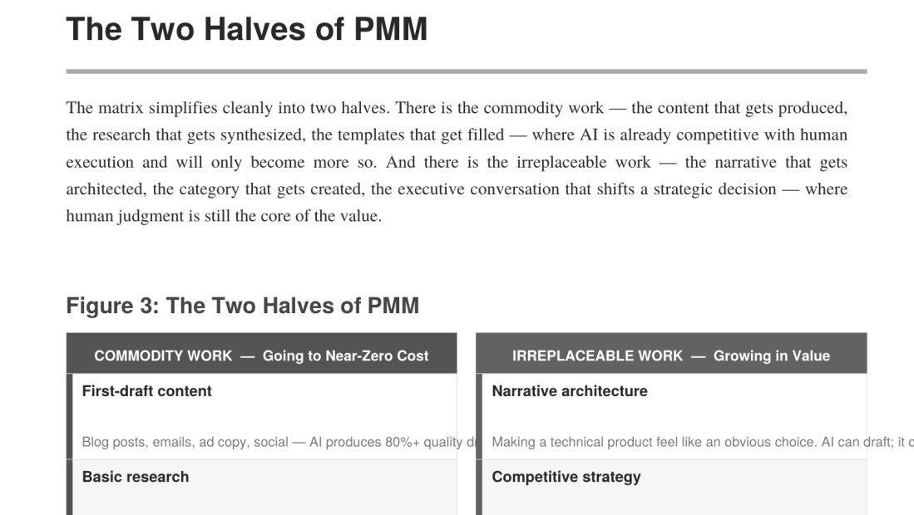
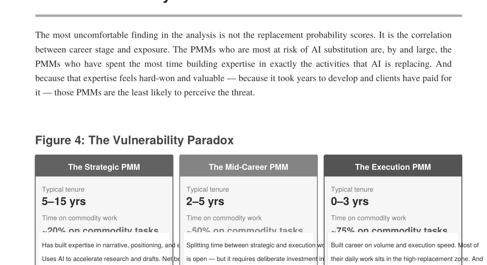

If you've been through Pragmatic Institute training—and there's a decent chance you have, since they've certified over 250,000 professionals—you know the Framework. Thirty-seven boxes arranged in seven categories: Market, Focus, Business, Planning, Programs, Enablement, and Support. Each box represents an activity that a product team needs to execute well to bring a product to market successfully. It's been the closest thing the product management and product marketing disciplines have to a shared operating system for three decades.
We've stared at that framework a lot over the past year. Not because we were studying for a certification—we were trying to answer a question that we couldn't find anyone else asking in a rigorous way: what happens to each of those thirty-seven boxes when AI agents become part of the team? Not in the abstract, feel-good, "AI will augment human creativity" sense. Concretely. Activity by activity. Which ones does an agent do better than a human today? Which ones does an agent make dramatically faster without sacrificing quality? And which ones remain stubbornly, irreducibly human—the ones where judgment, taste, political awareness, and lived experience are the actual product?
The exercise turned out to be both clarifying and unsettling in roughly equal measure. We'll walk you through the methodology, the results, and what we think it means for every PMM who's trying to figure out where to invest their time and energy.
We scored each of the thirty-seven Pragmatic activities across three dimensions. If you're the kind of person who likes to see the math—and if you're a PMM, you probably are—we built an interactive version of this analysis on futureofpmm.com where you can adjust the weightings and see how the scores shift. But for the purposes of this chapter, here's the framework.

The first dimension is automation potential: on a scale of 1 to 5, how much of this activity can an AI agent perform today, in early 2026, with commercially available tools? A score of 1 means the activity is almost entirely human. A score of 5 means an agent can do it end-to-end with minimal human oversight. We were deliberately conservative here—we scored based on what we've seen work in practice, not what a vendor's demo deck promises.
The second dimension is augmentation value: on a scale of 1 to 5, how much better does a human-plus-agent team perform than a human alone? This is different from automation. Some activities can't be fully automated but become dramatically more effective when an agent handles the research, synthesis, or first-draft generation. A score of 1 means the agent adds marginal value. A score of 5 means the human-agent combination is transformatively better than the human solo.
The third dimension is elevation opportunity: on a scale of 1 to 5, does this activity become more strategically important when the routine work around it is automated? This is the dimension most people miss. When you free up the hours that used to go into gathering competitive data, the act of interpreting that data and making strategic decisions based on it doesn't just stay the same—it gets elevated. The PMM who used to spend 80% of their competitive intelligence time on collection and 20% on analysis can now flip that ratio. The analysis itself becomes more valuable because there's more of it, it's grounded in better data, and it's happening in something closer to real time.
Running this analysis produced three natural clusters that organize the rest of this book. We're going to call them what they are, without softening the language, because PMMs deserve honesty about what's coming.

These are activities where automation potential scored 4 or 5—meaning that AI agents can perform the majority of the work today, with human oversight reduced to quality checks and strategic direction. This cluster includes activities that are fundamentally about data gathering, pattern matching, and content generation from structured inputs.
Take Market Sizing. The traditional approach: a PMM spends two to three weeks pulling data from Gartner, IDC, Statista, company filings, and industry reports. They build a bottom-up model in Excel. They triangulate against a top-down estimate. They produce a slide deck that says the addressable market is $4.2 billion growing at 12% CAGR. It's essential work—you can't build a business case without it—but it's also the kind of work that an agent with access to the right data sources can do in an afternoon. Not approximately. Actually well. The agent reads the same reports, builds the same models, triangulates the same way. The human's job shifts from doing the analysis to validating it and challenging the assumptions.
Or take Content Creation—specifically, the production of derivative content. Once you have a core messaging framework and a strong point of view, the mechanical act of turning that into blog posts, social copy, email sequences, slide decks, and sales one-pagers is straightforward generation work. Chris tested this extensively for futureofpmm.com, running the same content brief through Claude, ChatGPT, and Prezent. The results weren't perfect—they never are—but the first-draft quality was good enough that the human's job became editing and elevation rather than creation from scratch. That's a 70% time savings on the production side, conservatively.

Other activities that cluster here: Event Support operations (logistics, asset tracking, coordination), much of the Sales Tools production pipeline, routine aspects of the Marketing Plan (channel mapping, budget allocation against established models), and the mechanical dimensions of Competitive Analysis—the gathering part, not the interpretation part. We'll come back to that distinction in Chapter 3, because it matters enormously.
Here's the uncomfortable truth about Cluster One: these are the activities that many PMMs spend the majority of their time on. If you're a PMM whose primary value is producing artifacts—the battlecard, the one-pager, the launch email sequence, the competitive slide—the automation wave is not your friend. Those artifacts are going to be produced by agents at a fraction of the cost and a multiple of the speed. The question isn't whether this happens. It's whether you're the person directing the agents or the person being replaced by them.
These activities scored high on augmentation value (4 or 5) but moderate on automation potential (2 or 3). They're activities where the human remains essential but where the human-agent team is so much better than the human alone that operating without agents becomes a competitive disadvantage.
Positioning is the canonical example. No agent is going to write your positioning from scratch—not because the technology can't generate positioning statements (it can, all day long) but because positioning is fundamentally a strategic choice about what you want to be known for, who you're willing to lose, and how you want to show up relative to alternatives. Those are judgment calls that require understanding the market, the product, the competitive landscape, the sales team's capabilities, and the company's strategic ambitions all at once. An agent doesn't have that context. But an agent can synthesize the inputs that inform those judgment calls—win/loss data, competitive positioning shifts, analyst commentary, customer verbatims—at a speed and comprehensiveness that no human can match. The PMM who makes positioning decisions based on an agent-synthesized intelligence brief is going to make better decisions than the PMM who makes them based on gut instinct and a quarterly competitive review.
Win/Loss Analysis falls squarely in this cluster. The traditional process—interview the sales rep, maybe interview the customer if they'll talk to you, write up the findings, identify patterns, present to leadership—is time-intensive and limited by sample size. A PMM running win/loss analysis might cover twenty deals in a quarter. An agent-augmented PMM can process hundreds of deal records, pull themes from call transcripts, cross-reference against CRM data, and surface patterns that would take a human months to identify. The human still needs to interpret those patterns, decide which ones are actionable, and figure out the organizational response. But the input quality is transformatively better.
Buyer Personas sit here too. The research that feeds persona development—customer interviews, survey data, behavioral analytics, market segmentation—is exactly the kind of synthesis work that agents excel at. But the act of making a persona useful—deciding which attributes matter for positioning, which pain points are real versus performative, which objections are deal-breakers versus negotiating tactics—requires the kind of contextual judgment that comes from having sat across the table from actual buyers. An agent can build you a richly detailed persona document in an hour. Whether that document reflects reality depends on the human who directed the research and validated the output.
Other Cluster Two activities: the Buying Process mapping, Use Case development, Pricing strategy, Product Roadmap input, and the strategic layer of the Go-to-Market Plan. In each case, the agent accelerates the inputs and the human elevates the decision.
This is where it gets interesting—and where the career implications are most significant. Cluster Three activities scored high on elevation opportunity (4 or 5) and low on automation potential (1 or 2). These are the activities that become more important, more central, and more career-defining in the agentic era precisely because they are the ones that machines can't do.
Stakeholder Management. Every PMM knows that the hardest part of the job isn't writing the positioning document—it's getting twelve people to agree on it. It's navigating the VP of Sales who wants feature-led messaging, the CPO who wants vision-led messaging, the CFO who wants ROI-led messaging, and the CEO who wants all three on a single slide. No agent is going to sit in that room and read the body language and know that the reason the VP of Sales is pushing back isn't because they disagree with the positioning but because they're worried about quota attainment and they need the messaging to validate the deal structure they've been pitching for the last quarter. That's organizational intelligence. It's learned, not computed.
Thought Leadership—real thought leadership, not the commodity-content kind—lands here. Chris wrote about this at length on futureofpmm.com: the paradox is that AI makes it trivially easy to produce content that looks like thought leadership but contains no actual thinking. The market is about to be flooded with competent, bland, algorithmically generated "insights." The PMM who can cut through that noise with a genuine perspective—earned through experience, grounded in specific stories, delivered with a voice that is recognizably human—is going to be more valuable than ever. Not because thought leadership is new, but because the signal-to-noise ratio is about to collapse, and being the signal is a differentiator.

Customer Empathy is the one that surprises people, but it shouldn't. An agent can analyze ten thousand support tickets and tell you that 23% mention onboarding friction. A human can sit across from a customer, watch their face when they describe trying to get their team to adopt a new tool, and understand that the real problem isn't the onboarding UX—it's that the customer doesn't have executive sponsorship and they're trying to drive adoption bottom-up in a top-down culture. That's a completely different product marketing challenge than "fix the onboarding flow," and no amount of ticket analysis will surface it.
Other Cluster Three activities: Distinctive Competence identification—figuring out what your company is uniquely good at and why it matters; the strategic dimension of Channel Management—choosing the right partners and managing those relationships; and Innovation Games—the facilitated exercises where you discover unmet needs that customers can't articulate because they don't know they have them yet. In every case, the activity requires something an agent doesn't have: a theory of mind about other humans, a sense of organizational dynamics, and the ability to make judgment calls under ambiguity.
Here's what the three clusters mean in practical terms for how you spend your time.
If you're a PMM who currently spends 60% of your week on Cluster One activities—producing artifacts, gathering data, updating decks, coordinating logistics—you have a choice. You can keep doing those things the way you've always done them, in which case you're going to find yourself increasingly redundant as agents get better and as your more forward-leaning colleagues demonstrate what's possible. Or you can invest the next six months in building agent-powered workflows for those activities, reclaim those hours, and reinvest them in Cluster Two and Cluster Three work.
The math isn't complicated. A PMM who automates 20 hours a week of Cluster One work and redirects that time into deeper competitive analysis, more thoughtful positioning, better stakeholder management, and genuine thought leadership is going to outperform a PMM who's still manually updating battlecards and building market sizing models in Excel. Not by 20%. By a factor that justifies the title of this book.
That's not a threat. It's an opportunity—arguably the biggest opportunity in the history of the PMM discipline. Product marketing has always suffered from being spread too thin. The Pragmatic Framework has thirty-seven activities because the job really does encompass all of that. No single person can do all thirty-seven well. The agentic era doesn't shrink the list—it makes it possible, for the first time, for an individual PMM to meaningfully cover the full scope while going deep on the activities that matter most.
That is what "10x yourself" means. Not working ten times harder or ten times faster. Operating at a fundamentally different level of strategic impact because you've offloaded the mechanical work to machines that are built for it, and you're finally free to do the work that only a human can do.
The rest of Part II takes this framework and applies it to each major cluster of PMM activity. Chapter by chapter, we'll walk through what's changing, what the best PMMs are doing about it, and what you can start doing Monday morning. Each chapter maps back to specific Pragmatic activities, so if you want to trace the thread from the Framework to the agentic reality, you can.
But first, it's worth looking at what this analysis means from the other side of the hiring table—the executive perspective on what actually separates a good PMM from a great one.
The three-cluster analysis isn't just a useful framework—it's how CMOs are already making team decisions, whether they had a name for it or not. Over the past year, evaluating PMM performance has increasingly meant weighting Cluster Three contributions—stakeholder navigation, strategic judgment, genuine customer insight—far more heavily than Cluster One output. A great battlecard used to be impressive. Now the question is: did you build a system that produces great battlecards continuously?
That sounds harsh, and it deserves nuance. The artifact still matters. But the artifact is the output, not the value. The value is the insight that went into it, the strategic choice it represents, and the business outcome it drives. In the agentic era, a well-prompted agent can produce the artifact. What it can't produce is the judgment that decides what artifact to build, who it's for, and why it matters right now. When hiring, the most revealing question isn't "show me what you've produced"—it's "tell me how you work."